[내배캠] iOS 앱 개발 심화 개인 과제 - 책 검색 앱 만들기 2
지난이야기
- ⭐️책 검색 앱 만들기 1 보러가기⭐️
- 지난번에 이어 최근 본 책을 보여줄 컬렉션뷰와 책 검색 결과를 보여줄 테이블 뷰를 추가하도록 하겠습니다.
1. 컬렉션 뷰가 담길 뷰 추가하기
- 뷰를 추가해서 label과 컬렉션뷰를 담아보겠습니다.
- 추가된 코드만 작성하였습니다.
// MARK: - 최근 본 책의 title과 컬렉션뷰가 담길 뷰
class SearchBookViewController: UIViewController {
var recentlyViewedBooksView: UIView = {
let view = UIView()
view.layer.borderColor = #colorLiteral(red: 0, green: 0, blue: 0, alpha: 1)
view.layer.borderWidth = 1
view.translatesAutoresizingMaskIntoConstraints = false
return view
}()
override func viewDidLoad() {
setupAddView()
setupAutoLayout()
}
// MARK: - 뷰 추가
func setupAddView() {
//최근 본 책
view.addSubview(recentlyViewedBooksView)
}
// MARK: - 오토레이아웃 설정
private func setupAutoLayout() {
NSLayoutConstraint.activate([
recentlyViewedBooksView.topAnchor.constraint(equalTo: view.safeAreaLayoutGuide.topAnchor, constant: 10),
recentlyViewedBooksView.leadingAnchor.constraint(equalTo: view.safeAreaLayoutGuide.leadingAnchor, constant: 10),
recentlyViewedBooksView.trailingAnchor.constraint(equalTo: view.safeAreaLayoutGuide.trailingAnchor, constant: -10),
recentlyViewedBooksView.heightAnchor.constraint(equalTo: view.heightAnchor, multiplier: 0.2), //view 높이의 20%로 설정
])
}
}
실행화면
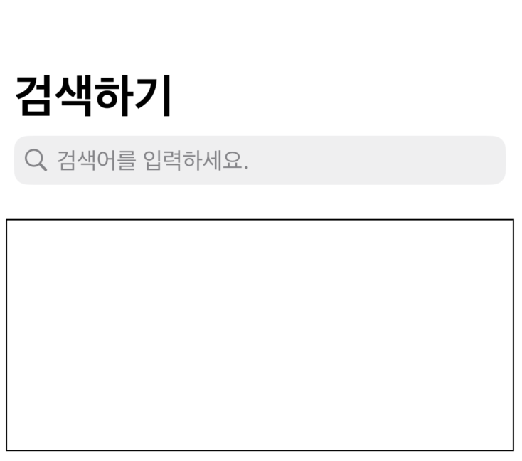
2. 컬렉션뷰가 담길 뷰에 Label 추가하기
- 추가된 코드만 작성하였습니다.
// MARK: - 최근 본 책 타이틀
private var recentlyViewedBooksTitleLabel: UILabel = {
let label = UILabel()
label.text = "최근 본 책"
label.font = UIFont.systemFont(ofSize: 20, weight: .bold)
label.translatesAutoresizingMaskIntoConstraints = false
return label
}()
// MARK: - 뷰 추가
private func setupAddView() {
recentlyViewedBooksView.addSubview(recentlyViewedBooksTitleLabel)
}
// MARK: - 오토레이아웃 설정
private func setupAutoLayout() {
NSLayoutConstraint.activate([
//최근 본 책
recentlyViewedBooksTitleLabel.topAnchor.constraint(equalTo: recentlyViewedBooksView.topAnchor, constant: 10),
recentlyViewedBooksTitleLabel.leadingAnchor.constraint(equalTo: recentlyViewedBooksView.leadingAnchor, constant: 10),
])
}
실행화면
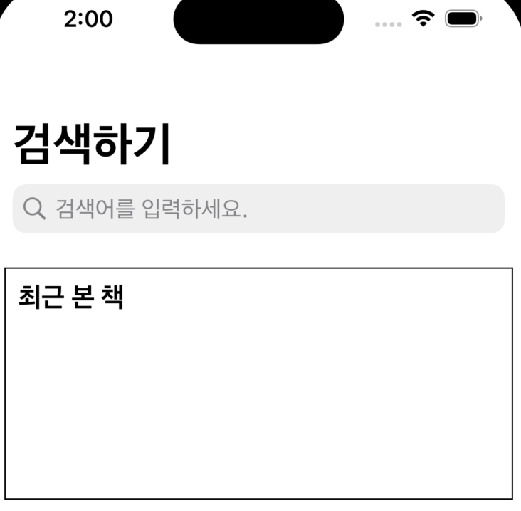
3. 컬렉션 뷰가 담길 뷰에 컬렉션 뷰 추가하기
- 추가된 코드만 작성하였습니다.
// MARK: - 최근 본 책 컬랙션 뷰
private lazy var recentlyViewedBooksCollectionView: UICollectionView = {
let flowLayout = UICollectionViewFlowLayout()
let collectionView = UICollectionView(frame: .zero, collectionViewLayout: flowLayout)
collectionView.layer.borderColor = #colorLiteral(red: 0, green: 0, blue: 0, alpha: 1)
collectionView.layer.borderWidth = 1
collectionView.translatesAutoresizingMaskIntoConstraints = false
return collectionView
}()
// MARK: - 뷰 추가
private func setupAddView() {
recentlyViewedBooksView.addSubview(recentlyViewedBooksCollectionView)
}
// MARK: - 오토레이아웃 설정
private func setupAutoLayout() {
NSLayoutConstraint.activate([
//컬렉션뷰
recentlyViewedBooksCollectionView.topAnchor.constraint(equalTo: recentlyViewedBooksTitleLabel.bottomAnchor, constant: 10),
recentlyViewedBooksCollectionView.leadingAnchor.constraint(equalTo: recentlyViewedBooksView.leadingAnchor, constant: 10),
recentlyViewedBooksCollectionView.trailingAnchor.constraint(equalTo: recentlyViewedBooksView.trailingAnchor, constant: -10),
recentlyViewedBooksCollectionView.bottomAnchor.constraint(equalTo: recentlyViewedBooksView.bottomAnchor, constant: -10),
])
}
실행화면
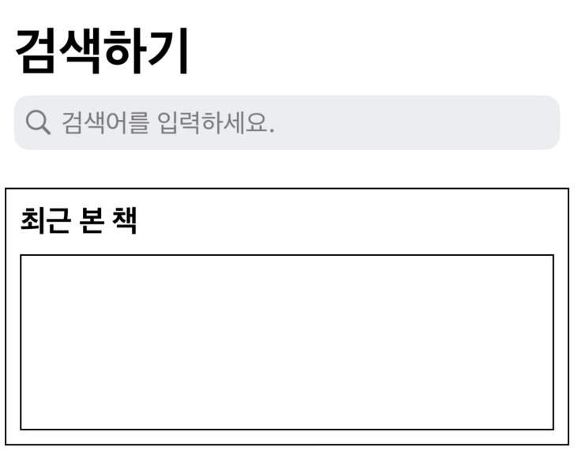
4. 컬렉션뷰에 Cell 추가하고 레이아웃 설정하기
- UICollectionViewCell을 상솓받는 RecentlyViewedBooksCollectionViewCell 이름의 파일을 만들었습니다.
- Cell 등록을 위한 identifier만 설정하였습니다.
class RecentlyViewedBooksCollectionViewCell: UICollectionViewCell {
// MARK: - Cell 등록 시 사용할 identifier 설정
static let identifier = String(describing: RecentlyViewedBooksCollectionViewCell.self)
override init(frame: CGRect) {
super.init(frame: frame)
self.layer.borderColor = #colorLiteral(red: 0, green: 0, blue: 0, alpha: 1)
self.layer.borderWidth = 1
}
required init?(coder: NSCoder) {
fatalError("init(coder:) has not been implemented")
}
}
5. Cell 등록 및 DataSource 프로토콜 채택하기
- SearchBookViewController에 컬렉션뷰 cell 등록 및 DataSource 프로토콜 채택하여 오토레이아웃을 잡아보겠습니다.
-
추가된 코드만 작성하였습니다.
override func viewDidLoad() { setupCollectionView() //컬렉션 뷰 설정 } // MARK: - 컬렉션뷰 설정 private func setupCollectionView() { recentlyViewedBooksCollectionView.dataSource = self recentlyViewedBooksCollectionView.register(RecentlyViewedBooksCollectionViewCell.self, forCellWithReuseIdentifier: RecentlyViewedBooksCollectionViewCell.identifier) //최근 본 책 컬렉션 뷰에서 사용할 Cell 등록 } // MARK: - 컬렉션뷰 데이터소스 프로토콜 채택 extension SearchBookViewController: UICollectionViewDataSource { func collectionView(_ collectionView: UICollectionView, numberOfItemsInSection section: Int) -> Int { return 10 } func collectionView(_ collectionView: UICollectionView, cellForItemAt indexPath: IndexPath) -> UICollectionViewCell { guard let cell = collectionView.dequeueReusableCell(withReuseIdentifier: RecentlyViewedBooksCollectionViewCell.identifier, for: indexPath) as? RecentlyViewedBooksCollectionViewCell else { return UICollectionViewCell() } return cell } }실행화면
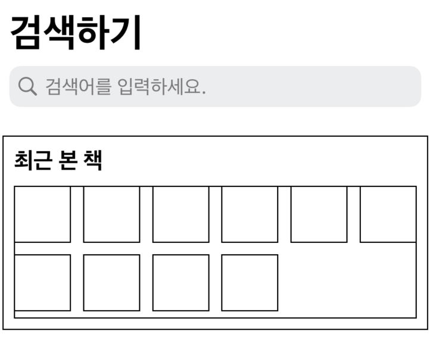
6. 컬렉션뷰 레이아웃 수정
- 컬렉션뷰의 스크롤 방향을 가로로 만들고 Cell이 1개씩만 보이도록 하겠습니다.
- 그 다음 Cell에는 이미지뷰와 label하나를 추가하겠습니다.
- 컬렉션 뷰 관련 참고 포스팅
- 추가된 코드만 작성하였습니다.
class SearchBookViewController: UIViewController {
let recentlyViewedBooksCollectionViewItemSpacing: CGFloat = 0 //아이템 사이 간격
let recentlyViewedBooksCollectionViewItemCnt: CGFloat = 1 //라인에 들어갈 아이템 수
// MARK: - 최근 본 책 컬랙션 뷰
private lazy var recentlyViewedBooksCollectionView: UICollectionView = {
flowLayout.scrollDirection = .horizontal //스크롤 방향
flowLayout.minimumInteritemSpacing = self.recentlyViewedBooksCollectionViewItemSpacing //아이템 사이 거리, 아이템 1개라 0으로 지정
flowLayout.minimumLineSpacing = 10 // 라인 사이 거리를 10으로 띄우기
}()
// MARK: - 컬렉션뷰 설정
private func setupCollectionView() {
recentlyViewedBooksCollectionView.delegate = self
}
}
// MARK: - 컬렉션뷰 플로우 레이아웃 프로토콜 채택
extension SearchBookViewController: UICollectionViewDelegateFlowLayout {
func collectionView(_ collectionView: UICollectionView, layout collectionViewLayout: UICollectionViewLayout, sizeForItemAt indexPath: IndexPath) -> CGSize {
let height = (recentlyViewedBooksCollectionView.bounds.height - (recentlyViewedBooksCollectionViewItemSpacing * (recentlyViewedBooksCollectionViewItemCnt - 1))) / recentlyViewedBooksCollectionViewItemCnt
return CGSize(width: 100, height: height)
}
}
실행화면
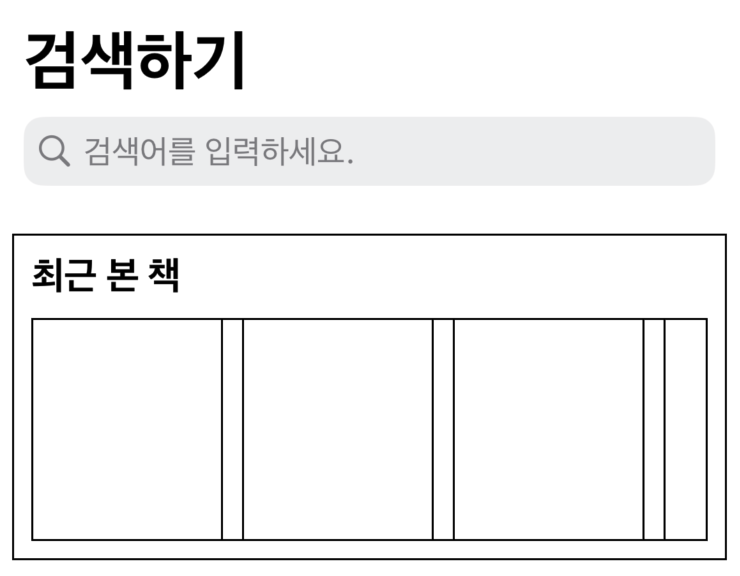
7. Cell에 imageView와 label 추가하기
- RecentlyViewedBooksCollectionViewCell 파일을 수정하였습니다.
- 전체 코드
class RecentlyViewedBooksCollectionViewCell: UICollectionViewCell {
// MARK: - Cell 등록 시 사용할 identifier 설정
static let identifier = String(describing: RecentlyViewedBooksCollectionViewCell.self)
// MARK: - 책 이미지
var bookImageView: UIImageView = {
let imageView = UIImageView()
return imageView
}()
// MARK: - 책 제목
var bookTitleLabel: UILabel = {
let label = UILabel()
label.text = "책 제목"
label.font = UIFont.systemFont(ofSize: 10, weight: .bold)
label.layer.borderColor = #colorLiteral(red: 0, green: 0, blue: 0, alpha: 1)
label.layer.borderWidth = 1
return label
}()
override init(frame: CGRect) {
super.init(frame: frame)
self.layer.borderColor = #colorLiteral(red: 0, green: 0, blue: 0, alpha: 1)
self.layer.borderWidth = 1
addView()
setupAutoLayout()
}
required init?(coder: NSCoder) {
fatalError("init(coder:) has not been implemented")
}
// MARK: - 뷰 추가
func addView() {
[bookImageView, bookTitleLabel].forEach { item in
item.translatesAutoresizingMaskIntoConstraints = false
addSubview(item)
}
}
// MARK: - 오토레이아웃 설정
func setupAutoLayout() {
NSLayoutConstraint.activate([
bookImageView.topAnchor.constraint(equalTo: topAnchor),
bookImageView.leadingAnchor.constraint(equalTo: leadingAnchor),
bookImageView.trailingAnchor.constraint(equalTo: trailingAnchor),
bookImageView.widthAnchor.constraint(equalTo: widthAnchor),
bookImageView.heightAnchor.constraint(equalTo: heightAnchor, multiplier: 0.8), //Cell의 80%
bookTitleLabel.topAnchor.constraint(equalTo: bookImageView.bottomAnchor),
bookTitleLabel.leadingAnchor.constraint(equalTo: leadingAnchor),
bookTitleLabel.trailingAnchor.constraint(equalTo: trailingAnchor),
bookTitleLabel.bottomAnchor.constraint(equalTo: bottomAnchor),
bookTitleLabel.widthAnchor.constraint(equalTo: widthAnchor),
bookTitleLabel.heightAnchor.constraint(equalTo: heightAnchor, multiplier: 0.2), //Cell의 20%
])
}
}
실행화면
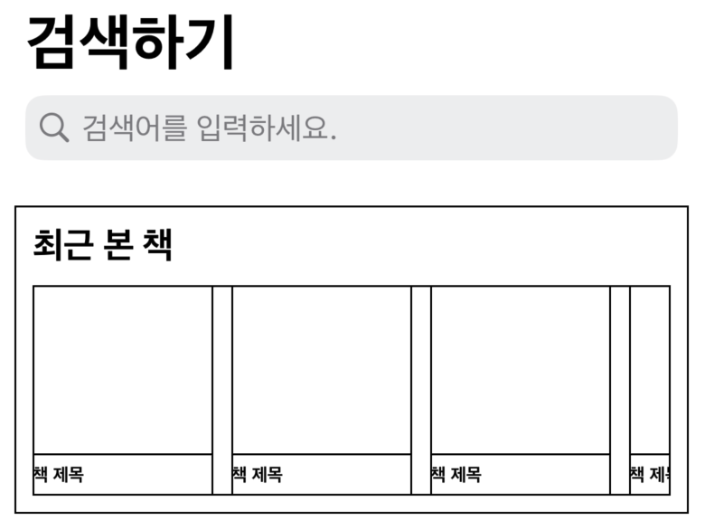
8. 테이블 뷰가 담길 뷰 추가하기
- 추가된 코드만 작성하였습니다.
// MARK: - 검색 결과 타이틀과 검색결과 테이블뷰가 담길 뷰
private var searchResultView: UIView = {
let view = UIView()
view.layer.borderColor = #colorLiteral(red: 0, green: 0, blue: 0, alpha: 1)
view.layer.borderWidth = 1
view.translatesAutoresizingMaskIntoConstraints = false
return view
}()
// MARK: - 뷰 추가
private func setupAddView() {
//검색 결과
view.addSubview(searchResultView)
}
// MARK: - 오토레이아웃 설정
private func setupAutoLayout() {
NSLayoutConstraint.activate([
//테이블 뷰와 타이틀을 담을 뷰
searchResultView.topAnchor.constraint(equalTo: recentlyViewedBooksView.bottomAnchor, constant: 10),
searchResultView.leadingAnchor.constraint(equalTo: view.safeAreaLayoutGuide.leadingAnchor, constant: 10),
searchResultView.trailingAnchor.constraint(equalTo: view.safeAreaLayoutGuide.trailingAnchor, constant: -10),
searchResultView.bottomAnchor.constraint(equalTo: view.safeAreaLayoutGuide.bottomAnchor, constant: -10),
])
}
실행화면
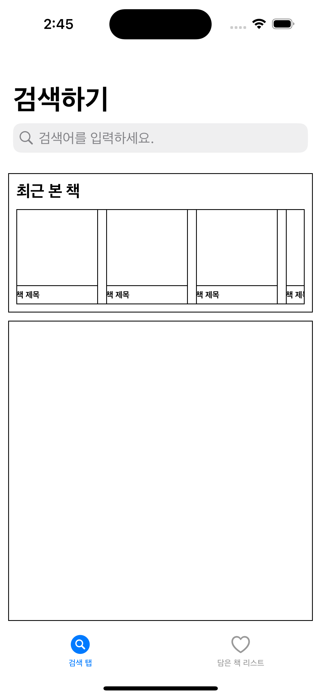
9. 테이블 뷰가 담길 뷰에 Label 추가하기
-
추가된 코드만 작성하였습니다.
// MARK: - 검색 결과 타이틀 private var searchResultTitleLabel: UILabel = { let label = UILabel() label.text = "검색 결과" label.font = UIFont.systemFont(ofSize: 20, weight: .bold) label.translatesAutoresizingMaskIntoConstraints = false return label }() // MARK: - 뷰 추가 private func setupAddView() { searchResultView.addSubview(searchResultTitleLabel) } // MARK: - 오토레이아웃 설정 private func setupAutoLayout() { NSLayoutConstraint.activate([ //검색 결과 타이틀 searchResultTitleLabel.topAnchor.constraint(equalTo: searchResultView.topAnchor, constant: 10), searchResultTitleLabel.leadingAnchor.constraint(equalTo: searchResultView.leadingAnchor, constant: 10), ]) }실행화면
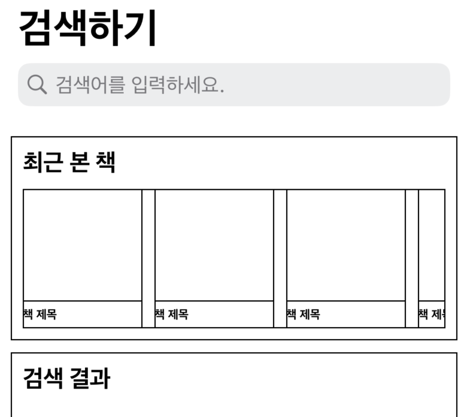
10. 테이블 뷰가 담길 뷰에 테이블 뷰 추가하기
- 추가된 코드만 작성하였습니다.
class SearchBookViewController: UIViewController {
// MARK: - 검색 결과 테이블 뷰
private var searchResultTableView: UITableView = {
let tableView = UITableView()
tableView.layer.borderColor = #colorLiteral(red: 0, green: 0, blue: 0, alpha: 1)
tableView.layer.borderWidth = 1
tableView.translatesAutoresizingMaskIntoConstraints = false
return tableView
}()
override func viewDidLoad() {
setupTableView() //테이블 뷰 설정
}
// MARK: - 뷰 추가
private func setupAddView() {
searchResultView.addSubview(searchResultTableView)
}
// MARK: - 테이블뷰 설정
private func setupTableView() {
searchResultTableView.dataSource = self
}
}
// MARK: - 테이블뷰 데이터소스 프로토콜 채택
extension SearchBookViewController: UITableViewDataSource {
func tableView(_ tableView: UITableView, numberOfRowsInSection section: Int) -> Int {
return 10
}
func tableView(_ tableView: UITableView, cellForRowAt indexPath: IndexPath) -> UITableViewCell {
return UITableViewCell()
}
}
실행화면
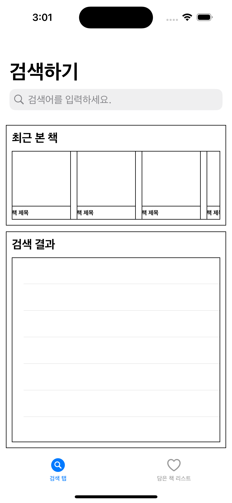
11. TableView Row의 Height 설정하기
- 추가된 코드만 작성하였습니다.
// MARK: - 테이블뷰 설정
private func setupTableView() {
searchResultTableView.delegate = self
}
// MARK: - 테이블뷰 델리게이트 프로토콜 채택
extension SearchBookViewController: UITableViewDelegate {
func tableView(_ tableView: UITableView, heightForRowAt indexPath: IndexPath) -> CGFloat {
return 120
}
}
실행화면
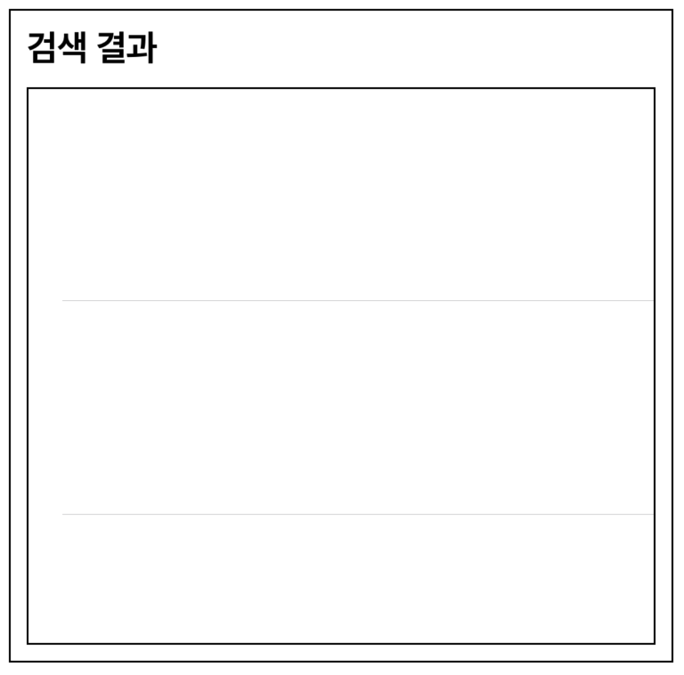
12. TableView Cell에 imageView 및 Label 추가하기
- UITableViewCell을 상속받는 SearchResultTableViewCell 파일을 만들었습니다.
- SearchResultTableViewCell 파일 전체 코드
class SearchResultTableViewCell: UITableViewCell {
//TableView Cell을 등록하기위해 식별자 설정
static let identifier = String(describing: SearchResultTableViewCell.self)
// MARK: - 책 이미지
var bookImageView: UIImageView = {
let imageView = UIImageView()
imageView.layer.borderColor = #colorLiteral(red: 0, green: 0, blue: 0, alpha: 1)
imageView.layer.borderWidth = 1
return imageView
}()
// MARK: - 책 제목
var bookTitleLabel: UILabel = {
let label = UILabel()
label.text = "책 제목"
return label
}()
// MARK: - 저자
var bookAuthorsLabel: UILabel = {
let label = UILabel()
label.text = "저자"
return label
}()
// MARK: - 책 가격
var bookPriceLabel: UILabel = {
let label = UILabel()
label.text = "책 가격"
return label
}()
// MARK: - 책 소개
var bookContentsLabel: UILabel = {
let label = UILabel()
label.text = "책 소개"
return label
}()
override func setSelected(_ selected: Bool, animated: Bool) {
super.setSelected(selected, animated: animated)
setupAddView()
setupAutoLayout()
}
// MARK: - 뷰 추가
func setupAddView() {
[bookImageView, bookTitleLabel, bookAuthorsLabel, bookPriceLabel, bookContentsLabel].forEach { item in
item.translatesAutoresizingMaskIntoConstraints = false
contentView.addSubview(item)
}
}
// MARK: - 오토레이아웃 추가
func setupAutoLayout() {
NSLayoutConstraint.activate([
//책 이미지
bookImageView.topAnchor.constraint(equalTo: contentView.topAnchor, constant: 10),
bookImageView.leadingAnchor.constraint(equalTo: contentView.leadingAnchor, constant: 10),
bookImageView.bottomAnchor.constraint(equalTo: contentView.bottomAnchor, constant: -10),
bookImageView.widthAnchor.constraint(equalToConstant: 100),
//책 제목
bookTitleLabel.topAnchor.constraint(equalTo: contentView.topAnchor, constant: 10),
bookTitleLabel.leadingAnchor.constraint(equalTo: bookImageView.trailingAnchor, constant: 10),
//책 저자
bookAuthorsLabel.topAnchor.constraint(equalTo: bookTitleLabel.bottomAnchor, constant: 10),
bookAuthorsLabel.leadingAnchor.constraint(equalTo: bookImageView.trailingAnchor, constant: 10),
//책 가격
bookPriceLabel.topAnchor.constraint(equalTo: bookAuthorsLabel.bottomAnchor, constant: 10),
bookPriceLabel.leadingAnchor.constraint(equalTo: bookImageView.trailingAnchor, constant: 10),
//책 소개
bookContentsLabel.topAnchor.constraint(equalTo: bookPriceLabel.bottomAnchor, constant: 10),
bookContentsLabel.leadingAnchor.constraint(equalTo: bookImageView.trailingAnchor, constant: 10),
])
}
}
13. TableViewCell 등록 및 cellForRowAt 메서드 수정
- SearchBookViewController 파일에서 tableView의 Cell을 등록합니다.
- 추가된 코드만 작성하였습니다.
// MARK: - 테이블뷰 설정
private func setupTableView() {
searchResultTableView.register(SearchResultTableViewCell.self, forCellReuseIdentifier: SearchResultTableViewCell.identifier) //검색 결과 테이블뷰에서 사용할 Cell 등록
}
func collectionView(_ collectionView: UICollectionView, cellForItemAt indexPath: IndexPath) -> UICollectionViewCell {
guard let cell = collectionView.dequeueReusableCell(withReuseIdentifier: RecentlyViewedBooksCollectionViewCell.identifier, for: indexPath) as? RecentlyViewedBooksCollectionViewCell else { return UICollectionViewCell() }
return cell
}
실행화면
- 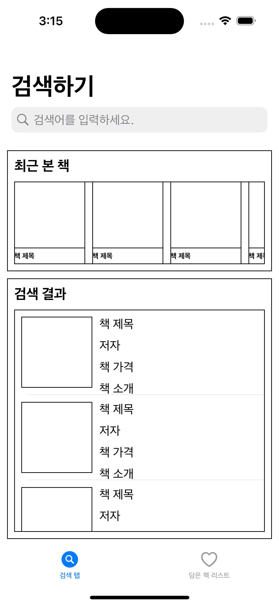
마무리
- 검색할 책의 데이터를 보여줄 컬렉션뷰와 검색결과를 보여줄 테이블뷰를 추가하였습니다.